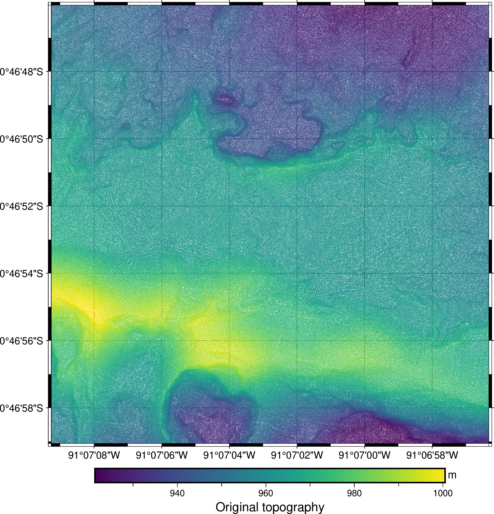
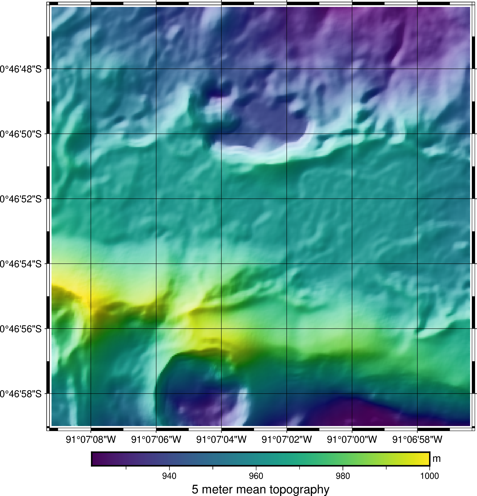

7. Calculate a rolling average of scattered point data#
Rolling averages are great for smoothing and downsampling data. It’s relatively
easy to perform them on regularly spaced data but not so for scattered points.
Let’s see how we can use bordado.rolling_window to calculate a rolling
average of some scattered topography data.
import ensaio
import pyproj
import pygmt
import numpy as np
import pandas as pd
import xarray as xr
import bordado as bd
For this example, we’ll use ensaio.ensaio.fetch_sierra_negra_topography
to get some topography data from the Sierra Negra volcano in the Galapagos:
fname = ensaio.fetch_sierra_negra_topography(version=1)
data = pd.read_csv(fname)
data
| longitude | latitude | elevation_m | |
|---|---|---|---|
| 0 | -91.115651 | -0.783062 | 930.1 |
| 1 | -91.115658 | -0.783056 | 930.7 |
| 2 | -91.115649 | -0.783060 | 930.3 |
| 3 | -91.115656 | -0.783063 | 929.7 |
| 4 | -91.115655 | -0.783068 | 929.2 |
| ... | ... | ... | ... |
| 1731379 | -91.118421 | -0.781943 | 990.7 |
| 1731380 | -91.118303 | -0.781933 | 990.2 |
| 1731381 | -91.118357 | -0.781971 | 992.4 |
| 1731382 | -91.118354 | -0.781940 | 991.2 |
| 1731383 | -91.118374 | -0.781945 | 991.4 |
1731384 rows × 3 columns
Let’s plot the data with pygmt to see what we’ve got:
region = bd.get_region((data.longitude, data.latitude))
fig = pygmt.Figure()
pygmt.makecpt(
cmap="viridis",
series=[data.elevation_m.min(), data.elevation_m.max()],
)
fig.plot(
x=data.longitude,
y=data.latitude,
fill=data.elevation_m,
cmap=True,
style="c0.01c",
projection="M15c",
region=region,
frame="afg",
)
fig.colorbar(frame=["af+lOriginal topography", "y+lm"])
fig.show()

The data are very high resolution and dense. If we want to smooth it and downsample it, a rolling average is just what we need.
Let’s first project the data so we can work with Cartesian distances instead of angles:
projection = pyproj.Proj(proj="merc", lat_ts=data.latitude.mean())
easting, northing = projection(data.longitude, data.latitude)
Now we can call rolling_windows to split the data into 5 meter
windows with a 75% overlap:
coordinates_proj, indices = bd.rolling_window(
(easting, northing), window_size=5, overlap=0.75,
)
# Get back longitude and latitude for the center of each window
coordinates = projection(*coordinates_proj, inverse=True)
With this, we have the coordinates of the center of each window and the indices
of the data points that fall inside each window. To calculate the rolling
average, we iterate over the indices and use them to index the data:
average_values = np.empty_like(coordinates[0])
for i in range(indices.shape[0]):
for j in range(indices.shape[1]):
average_values[i, j] = np.mean(data.elevation_m.iloc[indices[i, j]])
average_values
array([[953.41106383, 953.37628458, 953.33129771, ..., 932.0168357 ,
932.05904366, 932.14956897],
[953.77283951, 953.76188679, 953.74763636, ..., 933.89738806,
933.96431298, 934.04811133],
[954.1721519 , 954.16521739, 954.18555133, ..., 935.90951456,
935.87777778, 935.88033473],
...,
[950.03261803, 950.10575221, 950.10990991, ..., 933.85158371,
934.01933962, 934.16287129],
[949.79118943, 949.80904977, 949.80133929, ..., 933.87385321,
934.04953271, 934.2285 ],
[949.5518018 , 949.54813084, 949.51342593, ..., 933.88073394,
934.08537736, 934.26192893]], shape=(317, 317))
If we choose to assign the data values to the coordinates of the center of the
windows, we now have a regular grid. We can wrap the coordinates and the rolling
average in a xarray.DataArray:
average = xr.DataArray(
average_values,
coords={"longitude": coordinates[0][0, :], "latitude": coordinates[1][:, 0]},
dims=("latitude", "longitude")
)
average
<xarray.DataArray (latitude: 317, longitude: 317)> Size: 804kB
array([[953.41106383, 953.37628458, 953.33129771, ..., 932.0168357 ,
932.05904366, 932.14956897],
[953.77283951, 953.76188679, 953.74763636, ..., 933.89738806,
933.96431298, 934.04811133],
[954.1721519 , 954.16521739, 954.18555133, ..., 935.90951456,
935.87777778, 935.88033473],
...,
[950.03261803, 950.10575221, 950.10990991, ..., 933.85158371,
934.01933962, 934.16287129],
[949.79118943, 949.80904977, 949.80133929, ..., 933.87385321,
934.04953271, 934.2285 ],
[949.5518018 , 949.54813084, 949.51342593, ..., 933.88073394,
934.08537736, 934.26192893]], shape=(317, 317))
Coordinates:
* latitude (latitude) float64 3kB -0.783 -0.783 -0.783 ... -0.7795 -0.7795
* longitude (longitude) float64 3kB -91.12 -91.12 -91.12 ... -91.12 -91.12Note
While it’s useful to have a xarray.DataArray, this step is entirely
optional.
The DataArray can be passed to pygmt.Figure.grdimage to
make a pseudo-color plot of the smoothed topography with some hill shading:
fig = pygmt.Figure()
fig.grdimage(
average,
cmap="viridis",
projection="M15c",
region=region,
shading=True,
frame="afg",
)
fig.colorbar(frame=["af+l5 meter mean topography", "y+lm"])
fig.show()

The features in the 5-meter average grid above are smoothed when compared to the original point data.